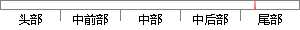

如果要对现在的区块进行篡改，那么攻击者需要完成当前区块之前的所有工作量，并最终超越现有的区块的工作量。
片段位置图

相似结果|
相似片段 1：如果网络中诚实的节点占多数，那么合法的区块会组成最长的区块链。如果想要对已经出现的区块进行恶意篡改，攻击者必须重新完成该区块的工作量外加该区块之后所有区块的工作量，并最终赶上和超越诚实节点的工作量
相似片段 2：其中“大多数”决定了包含最大工作量的最长链。当大多数CPU为诚实结点掌握，则链条将会以诚实的方式蔓延下去，并超越其他所有的分链。假设攻击者相对已有区块信息进行篡改，则必须完成该区块及其之后所有区块
|
※ 片段修改建议 ※
近似词参考：- 如果：若是 假如 要是
- 现在：此刻 而今 目前 目下当今 如今
- 进行：举行
- 篡改：窜改
- 那么：那末
- 需要：必要
- 之前：以前
- 所有：全部
- 最终：终究 终极
- 超越：超出 逾越
系统自动生成语句：若是要对此刻的区块举行窜改，那末攻击者必要完成当前区块以前的全部工作量，并终究超出现有的区块的工作量。
注：本片段修改建议为系统自动生成，仅供参考。